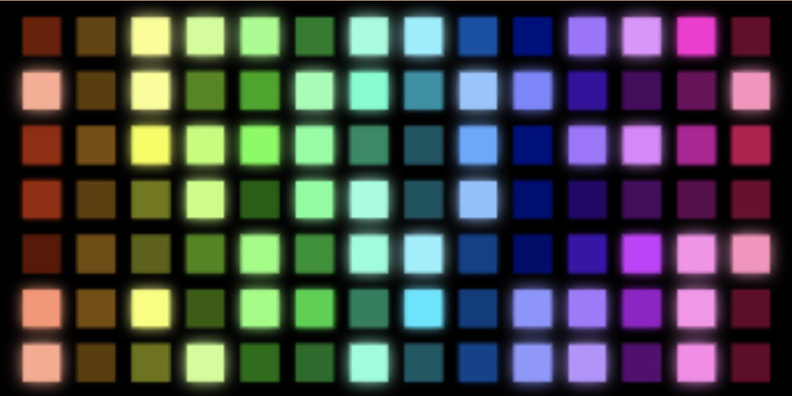
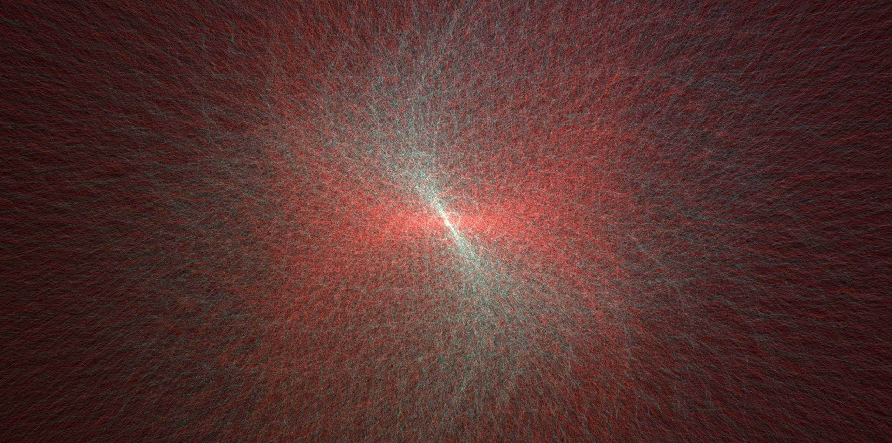
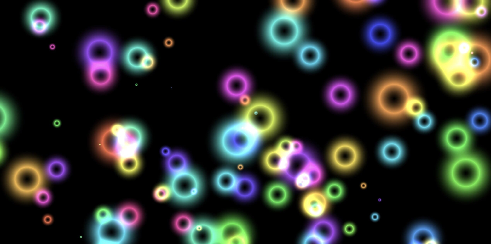

Spotify analyzes the content on its platform to accurately capture the listening habits and preferences of its users.
This program can use data gathered by the Spotify API to display and create unique visualizers for specific tracks. This app can access, share, and use audio features from Spotify to create fun visualizers.
The audio features communicate the subjective listening experience of tracks to the Spotify algorithm. It turns elements of songs such as happiness, energy, and vocal presence into numerical values. These values can gather and predict the taste and mood of Spotify users.
All songs on Spotify are divided into four categories depending on their valence and energy values.
| Name |
Image |
Description |
Songs to try |
| Dance Floor |
 |
Songs with energy values greater than 0.750 and valence greater than 0.500 belong to this group. This group typically includes tracks made for dancing.
The program uses danceability, valence, and tempo vvalues to create and display the visualizer. The danceability value determines the speed of color change; higher values increase speed.
The valence value determines the brightness of the colors; higher values increase brightness. The tempo controls the number of tiles; a higher tempo creates more tiles in the visualizer. |
- 24K by Bruno Mars
- don't be afraid by Knxwledge
- Down by St. Vincent
- Don't Start Now by Dua Lipa
|
| Energy Source |
 |
Songs with energy values lower than 0.750 and valence greater than 0.500 belong to this group. This group typically includes RnB and other relaxing and happy music.
The program uses energy, danceability, and tempo values to create and display this visualizer. The energy value controls the size of the source; higher energy creates a brighter source.
The danceability value dictates the speed of color change; higher danceability faster color change.
The tempo determines the frequency of the pulsing; a higher tempo causes faster energy waves. |
- Waiting by Deniece Willaims
- The Less I Know The Better by Tame Impala
- Ever Again by Robyn,
- Believe In God by J Dilla
|
| Spinning Orbs |
|
Songs with energy values greater than 0.500 and valence lower than 0.500 belong to this group. This group contains a mix of hip hop, RnB, indie rock, and other energetic but dark songs.
The program uses energy, danceability, valence and tempo values to create and display this visualizer. The energy value determines the size of the orbs; higher energy creates larger orbs.
The danceability value determines the frequency of the orbs' expansion. Higher danceability leads to faster expansion and contraction.
The valence number determines the brightness of the dots that make up the orb; higher valence creates a brighter visualizer.
The tempo determines the speed of the bots' swinging; higher tempo leads to faster pendulations. In addition, the tempo value assigns different songs with different colored visualizers. |
- Under Your Spell by Desire
- Imperfect Circle by Jorja Smith
- Lover Ghost by Anna of the North
- The Chain by Fleetwood Mac
|
| Floating Bubbles |
 |
Songs with energy values lower than 0.500 and valence lower than 0.500 belong to this group. This group contains melancholy, slow, and relaxing music as well as some trap, heavy metal, dark music.
The program uses energy, danceability, valence and tempo values to create and display this visualizer. The energy value controls the brightness of the bubbles; higher energy causes the outlines of the bubbles to be brighter.
The danceability value determines the colors; higher danceability leads to more colorful bubbles. The valence number determines the size of the bubbles; higher valence creates larger bubbles.
The tempo determines the number of bubbles; higher tempo leads to more bubbles |
- Something About Us by Daft Punk
- Limit To Your Love by James Blake
- The Void by Kid Cudi
- Olympus by Sufjan Stevens
|